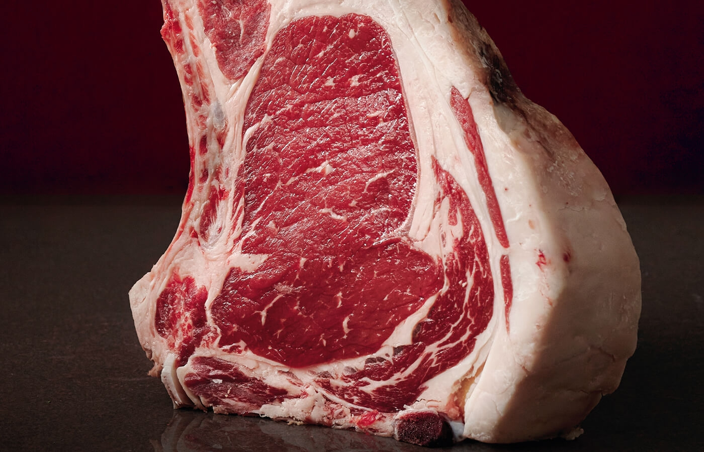

Su carne se caracteriza por tener grasa infiltrada o intramuscular, en lugar de exterior, tal y como nos explica Dionisio Dévora, ganadero dedicado a estas reses y socio de Don Angus. Esto le confiere un suculento aspecto veteado y la convierte en un alimento mucho más saludable al ser baja en calorías